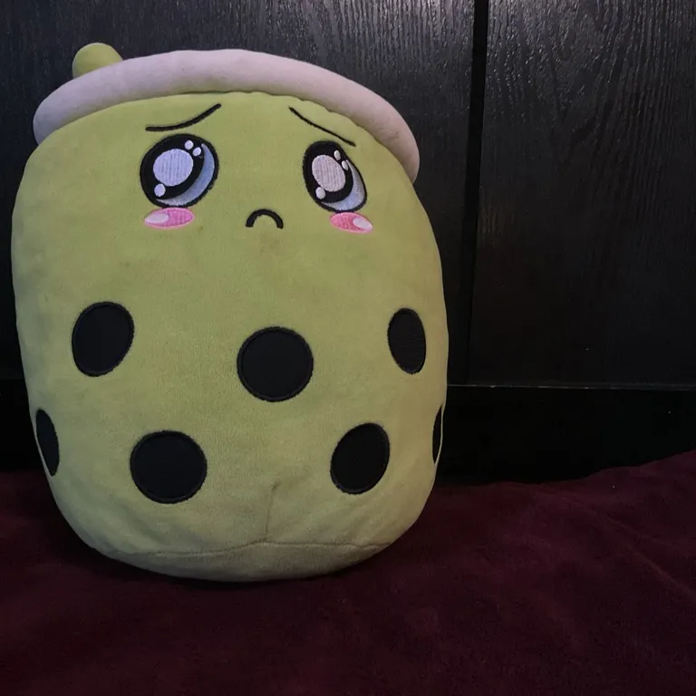
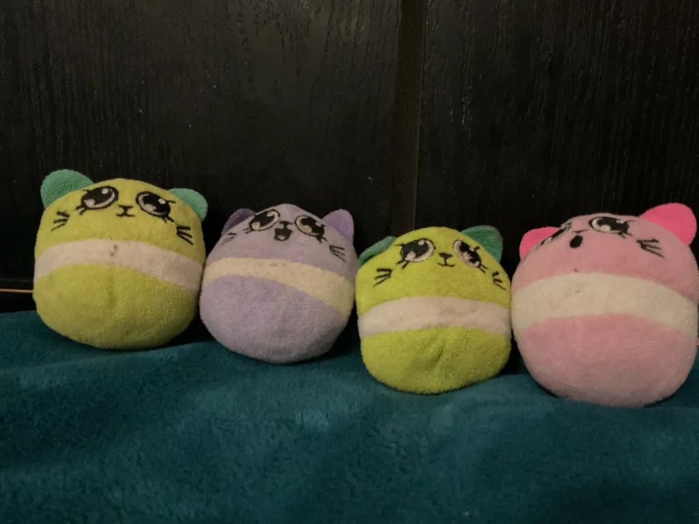
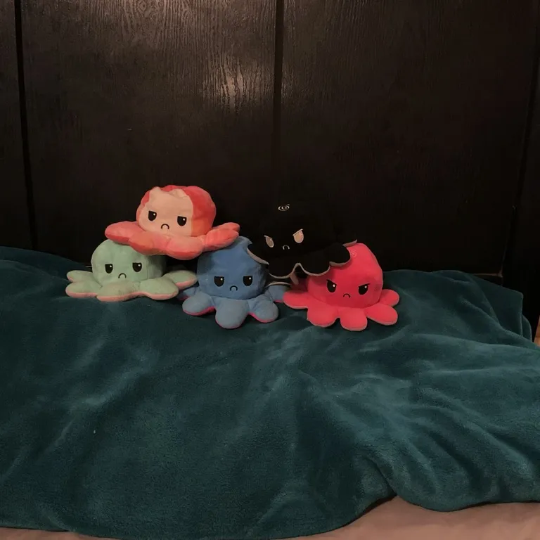

He will burn you.
Blueberry is sad, gloomy and rarely comes out.
Bob is just... Bob. Mysteriously delicious.
Boo flies high above the sky, very friendly though.

"As a child I yearn for the bubble tea".
Bubble makes bubble,he's a chill guy fr fr
Do you have 40 cakes and want to go on a adventure well, NOTHING BEATS A JET2 HOLIDAY, with 50 pounds off ech cake thats 2000 pounds off for a family of 40!
Casper appears only when there no other cakes around. Shh!
Cheesecake. Great pillow fr fr
Christmascake radiates with +aura.
"He approaches you at night"- Pinky
Fetch Sky - "Just pure aura"- Everyone
Fetch and Fetch jr are father and son possibly? yummy yummy meat.
Fetchipoo Jr is tiny cute and maybe fetch's son? Godspeed
Fetchipoo.Great pillow fr fr.Cute. Good to cuddle with.
"Finchy is feathery, flaky, and chirps when you eat"- AI. "Finchy is so excited for lobster season, little does he know"
Frog. Frog. Frog. Frog. Frog. Frog. Frog. Frog. Frog. Frog. Frog. Frog. Frog. Frog. Frog. Frog.
Frogee. mama frog
Froget."Very frogetful"-Seaweed "you're not frogy, seaweed"-Kelpy
Golden Christmas Cake radiates so brightly nobody can see him. +++aura.
Greenlufa is toy for cakipoo.
They are all a team touch them , they will touch you.
"Henriatta lays frosting eggs—very rare, very tasty."- Heneriatta does not approve of this AI response. "I am tortill"-Henriatta "I block all that"- Henriatta
Jello is pluffy and smart.He has seemed to evolved differnetly than other cakes.
Kelpy and Seaweed are like yin and yang, mix and max, piddle and paddle.
Lettuce is friend with blueberry and tomato. They all escaped from the grocery store together
Lufas boosts cakes and make them happy.
Lychee is an Avocado. ?????Identidy crisis?????. Lychee is best friend with Henriatta
mouse gang.
mouse love cheese nibble nibble
"Mouse1 is quiet and nibbly with marshmallow ears"-AI

"Mouseipoo3 hides in corners with chocolate chip trails" - AI
Owl *Goes one way*, *Finchy goes the other way* "Nah jit stupid"-Owl, Cake Lock team D vs Team E
Pancake goes *nibble* *nibble* cheese.
Peacake. GODSPEED SPIDERMAN.
Pebble is pebble from canada. He tank all that.
Pillow is shy and quiet, quite spooky at night tho.
Pinkcake is bubblegum dreams and strawberry screams - AI is wild fr fr
Pinky.Don't ragebait him. He will burn you in a nonosecond.
Purple Lufa is squishy, scrubby, and grape-flavored
weirdness.-AI
Deciving and small loved by everyone.
Rootbeer floats into your heart with foamy love-Rootbeer approves of this AI response.BRUV is obessed with rootbeer fr fr fr fr fr fr fr
Seaweed. Very clueless. Very dip dip. Unlike Kelpy
Spinny.Helicoptor! Helicoptor! Bye Bye Bye Byee, Spinny vanishes into the sky to aura farm.
Strawberry is berry-licious and always in season.- Dawg what is this AI response. strawberry loves food."Strawluu very big back"-pinky
Sunny shines with citrus rays and lemon zest smiles.-At this point i dont know what the AI is saying.
Super Duck swoops in with quacktastic frosting.- PEAK AI FR FR FR
Sweetpea is the momma octopus , kinda?
Taco : "Am monkey, ooh ooh aah ahh, Curious george"
who is the Dad? the bigger new one? or the smaller older one ? one is tortill, one is tortiss.
Henriatta but with hands and is smaller, and maybe cuter?
ITS TOO CUTE THE AURA ITS...ITS....ITS TOO MUCH
SHATHERED AND BATTERED AND IN THE OVEN GRILLED UNTIL REDUCED TO NOTHING
BREAD AND BUTTER IN THE OVEN. COOKED UNTILL REDUCED TO NOTHING
SO CUTE.
Tomato.AOE, 1000damage. 15 range, 1000burn. 0.1cooldown. You're cooked fr

I feel bad they must be sad.............."They know when you're asleep, they know when you're awake, they know you're adress, they see you" nvm i dont fell sorry- fetch
Waffles many tentcles spooky relistic
Yellowsnake slithers with banana custard filling!- LAST ONE, also what the AI is back?